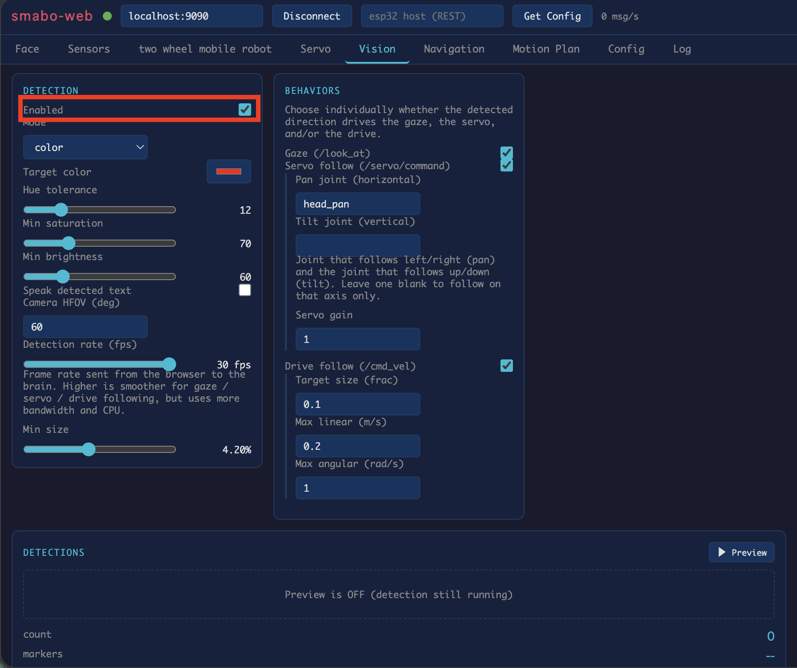
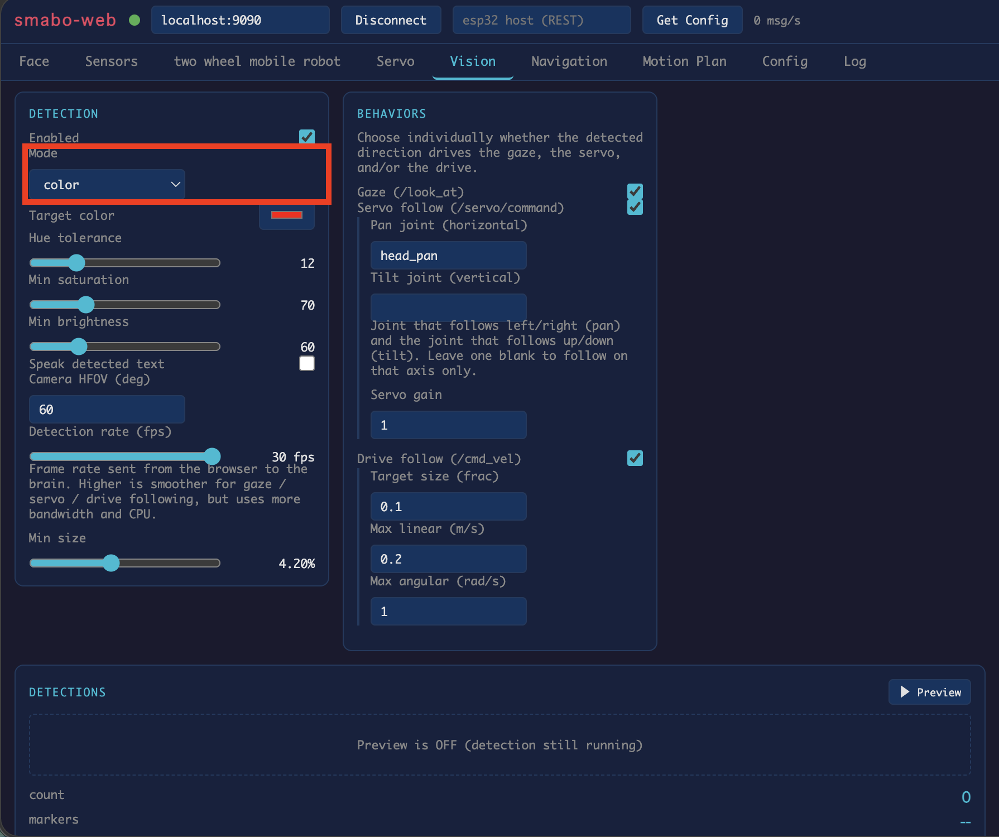
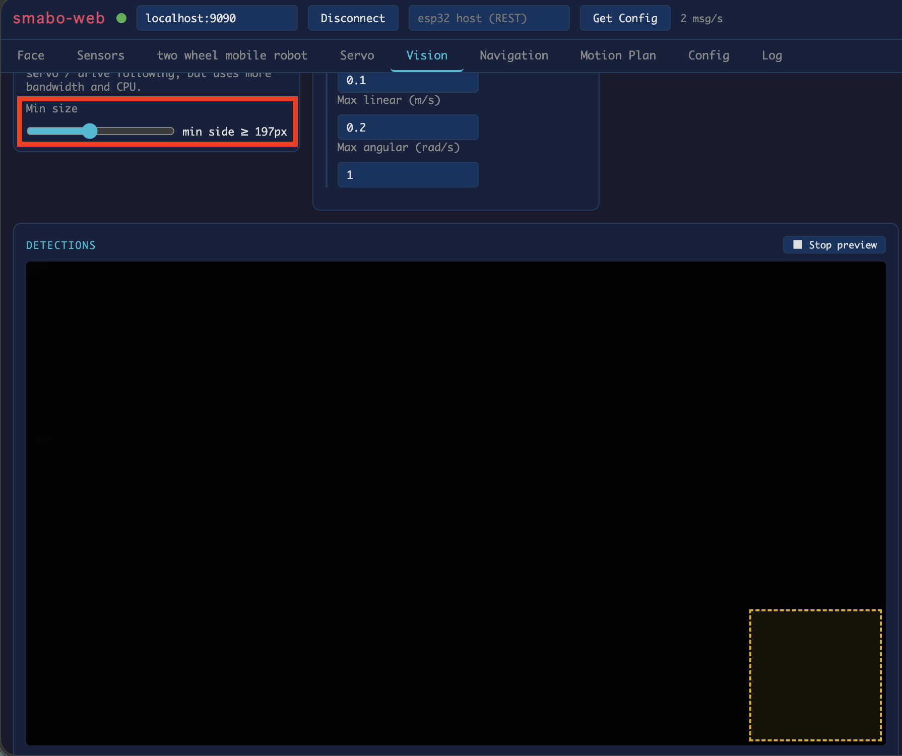
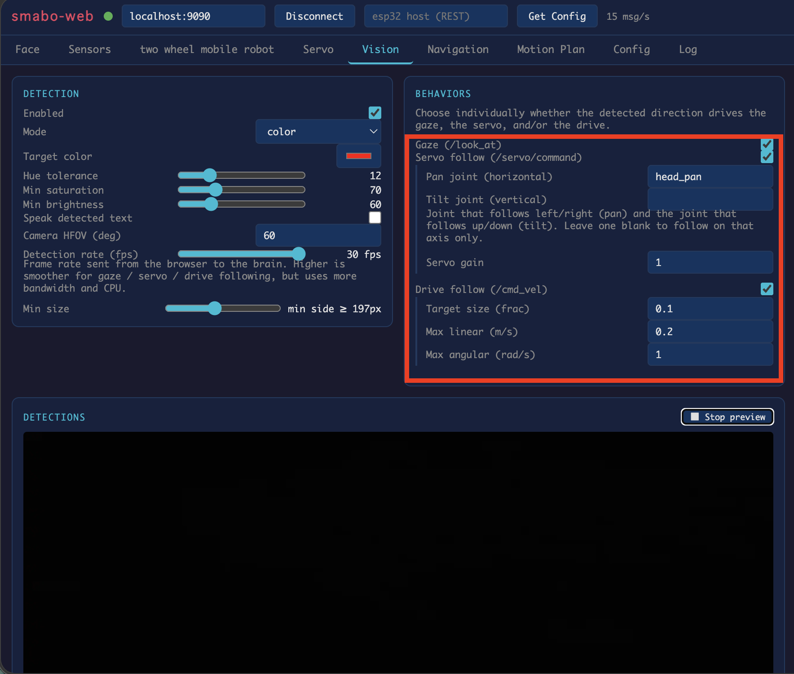
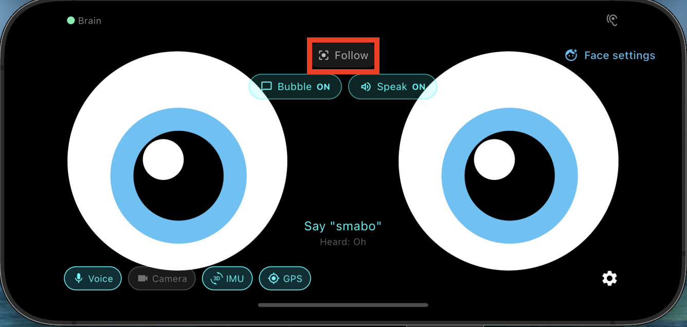

ロードマップ#
本ページは、以下ロードマップ「画像処理」のガイドページです。
また、本ページは「smabo-brain」と「smabo-app」のガイドを実施している前提で話を進めます。
概要#
本ページでは「画像処理」機能の実装について解説します。
具体的には、以下の内容を実施します。
- smabo-webから画像処理の設定
- 認識対象（色物体、ARマーカー、QRコード）の設定など
- カメラから取得した画像をもとに、対象物体を識別
- 識別結果をsmabo-webで可視化
- 識別結果をもとにsmaboの目を制御
動作手順#
起動手順#
「こちらの起動手順」の内容を実行してください。
画像認識#
smabo-webの「Vision」タブにて画像認識に関する設定が可能で、「Detection」の「enabled」を有効化することで、画像認識機能を有効化できます。

画像認識はいくつかの種類が用意してあり、「Mode」を変更することで、以下の物体を認識可能です。
- ARマーカー
- 指定した色の物体
- 顔認識
- QRコード

なお、Min sizeを設定することで
- 画像内で認識対象とする物体の最小サイズ（このサイズ以上の物体は認識対象とする）
を設定可能です（プレビューを有効化すると、右下に最小サイズの枠が表示されます）。

物体認識をもとに制御#
「BEHAVIORS」にて、認識結果をもとにした制御も可能です。
具体的には、
- 認識した中で、「一番大きい物体」の座標や画像サイズをもとに制御
します。

制御の種類としては、以下になります。
- 目の制御
- 認識した物体を追従するようにsmaboの目が動作
- サーボの制御
- 認識した物体に追従するようにサーボが動作
- 左右方向、上下方向それぞれにサーボを設定可能
- 詳細は「顔振り」にて解説
- 二輪駆動ロボットの制御
- 認識した物体を追従するようにロボットを制御
- 物体のサイズが、target sizeに設定されたサイズを維持するように、ロボットが前進、後退
- 詳細は、「移動ロボット」にて解説
例えば、「目の制御」の場合、
- smabo-appの顔のモードを「Follow」にした状態
で、認識対象の物体をカメラの前に持ってくると、smaboの目が追従することが確認できます。

次回#
次回は、以下ロードマップの
について解説します。